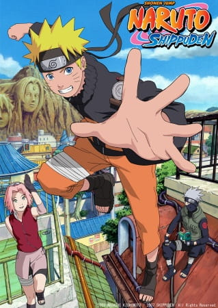

Naruto Shippuden

×

You can Watch Naruto Shippuden on our official website.
Your trusted site to watch Naruto Shippuden full episodes, including Dub and Sub versions, and all other anime series.
You can Watch Naruto Shippuden on our official website.
It has been two and a half years since Naruto Uzumaki left Konohagakure, the Hidden Leaf Village, for intense training following events which fueled his desire to be stronger. Now Akatsuki, the mysterious organization of elite rogue ninja, is closing in on their grand plan which may threaten the safety of the entire shinobi world.
Although Naruto is older and sinister events loom on the horizon, he has changed little in personality—still rambunctious and childish—though he is now far more confident and possesses an even greater determination to protect his friends and home. Come whatever may, Naruto will carry on with the fight for what is important to him, even at the expense of his own body, in the continuation of the saga about the boy who wishes to become Hokage.
(Source: MAL Rewrite)
Synonyms: Naruto Hurricane Chronicles
Japanese: -ナルト- 疾風伝
English: Naruto Shippuden
German: Naruto Shippuden
Spanish: Naruto Shippuden
French: Naruto Shippuden